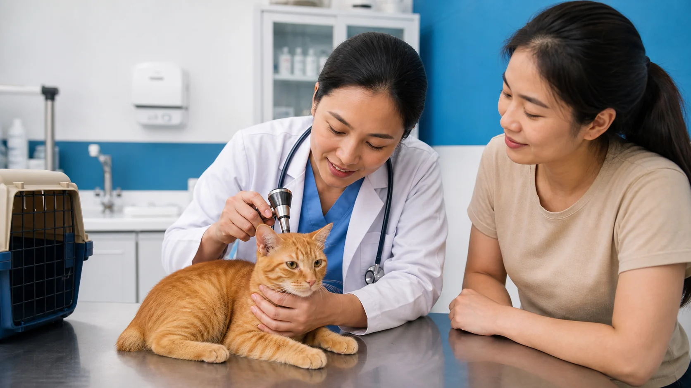

VetFusion Animal Clinic - SJDM Branch
Complete veterinary care when your pet needs it most.
Routine checkups, diagnostics, surgery, preventive pet care, and urgent veterinary support for pets in San Jose del Monte.
- Compassionate veterinary care
- Urgent support available
- Convenient Gaya-Gaya location
Services
Veterinary Services for Every Stage of Your Pet's Life
From routine preventive care to emergency treatment and surgical procedures, VetFusion Animal Clinic is committed to providing compassionate, reliable, and professional veterinary care for your beloved pets.
Clinic Updates
Announcement board

About VetFusion
Compassionate veterinary care for every stage of your pet's life
VetFusion Animal Clinic supports pet owners in San Jose del Monte with practical veterinary guidance, clinic visits, appointment requests, and direct urgent-call support. Contact the clinic for the most current schedule and service availability.
Gallery
A calmer look at clinic care
Appointment Request
Request an Appointment
Send your preferred schedule and visit details. The clinic will contact you to confirm your appointment.
For urgent concerns, call the clinic directly instead of waiting for appointment confirmation. Call Us
Contact and Location